토목기사 (2021-03-07 기출문제)
1과목: 응용역학
1. 그림과 같은 직사각형 단면의 단주에서 편심하중이 작용할 경우 발생하는 최대압축응력은? (단, 편심거리(e)는 100mm이다.)
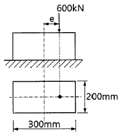
- 30MPa
- 35MPa
- 40MPa
- 60MPa
(정답률: 56%)

2. 단면과 길이가 같으나 지지조건이 다른 그림과 같은 2개의 장주가 있다. 장주 (a)가 30kN의 하중을 받을 수 있다면, 장주 (b)가 받을 수 있는 하중은?
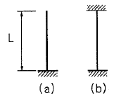
- 120kN
- 240kN
- 360kN
- 480kN
(정답률: 73%)
3. 그림과 같은 단순보에서 A점의 처짐각(θA)은? (단, EI는 일정하다.)
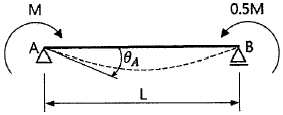
- ML/2EI
- 5ML/6EI
- 5ML/12EI
- 5ML/24EI
(정답률: 52%)
4. 그림과 같은 평면도형의 x-x'축에 대한 단면 2차 반경(rx)과 단면 2차 모멘트(Ix)는?
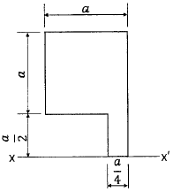
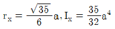
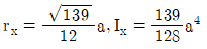
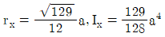
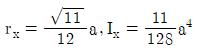
(정답률: 59%)
5. 그림과 같은 보에서 지점 B의 휨모멘트 절댓값은? (단, EI는 일정하다.)
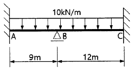
- 67.5kN·m
- 97.5kN·m
- 120kN·m
- 165kN·m
(정답률: 53%)
6. 그림에서 직사각형의 도심축에 대한 단면 상승 모멘트(Ixy)의 크기는?
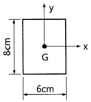
- 0cm4
- 142cm4
- 256cm4
- 576cm4
(정답률: 77%)
7. 폭 100mm, 높이 150mm인 직사각형 단면의 보가 S=7kN의 전단력을 받을 때 최대전단 응력과 평균전단응력의 차이는?
- 0.13MPa
- 0.23MPa
- 0.33MPa
- 0.43MPa
(정답률: 57%)
8. 그림과 같은 단순보에 등분포하중 w가 작용하고 있을 때 이 보에서 휨모멘트에 의한 탄성변형에너지는? (단, 보의 EI는 일정하다.)
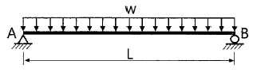
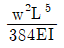
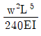
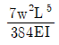
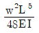
(정답률: 65%)
9. 그림과 같이 하중을 받는 단순보에 발생하는 최대전단응력은?
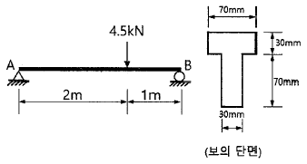
- 1.48MPa
- 2.48MPa
- 3.48MPa
- 4.48MPa
(정답률: 57%)
10. 재질과 단면이 동일한 캔틸레버 보 A와 B에서 자유단의 처짐을 같게 하는 P2/P1의 값은?
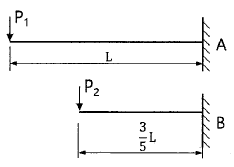
- 0.129
- 0.216
- 4.63
- 7.72
(정답률: 42%)
11. 그림과 같은 3힌지 아치의 C점에 연직하중(P) 400kN이 작용한다면 A점에 작용하는 수평반력(HA)은?
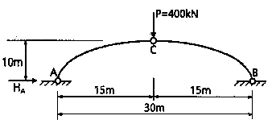
- 100kN
- 150kN
- 200kN
- 300kN
(정답률: 65%)
12. 그림과 같이 X, Y축에 대칭인 빗금 친 단면에 비틀림우력 50kN·m가 작용할 때 최대전단응력은?
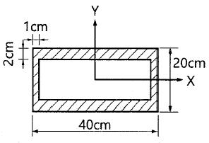
- 15.63MPa
- 17.81MPa
- 31.25MPa
- 35.61MPa
(정답률: 37%)
13. 그림과 같이 균일 단면 봉이 축인장력(P)을 받을 때 단면 a-b에 생기는 전단응력(τ)은? (단, 여기서 m-n은 수직단면이고, a-b는 수직단면과 Ø=45°의 각을 이루고, A는 봉의 단면적이다.)
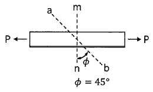
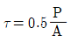
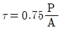
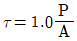
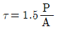
(정답률: 41%)
14. 그림과 같은 구조물에서 지점 A에서의 수직반력은?
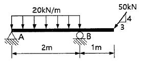
- 0kN
- 10kN
- 20kN
- 30kN
(정답률: 68%)
15. 그림과 같이 단순보에 이동하중이 작용할 때 절대최대휨모멘트가 생기는 위치는?
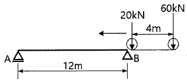
- A점으로부터 6m인 점에 20kN의 하중이 실릴 때 60kN의 하중이 실리는 점
- A점으로부터 7.5m인 점에 60kN의 하중이 실릴 때 20kN의 하중이 실리는 점
- B점으로부터 5.5m인 점에 20kN의 하중이 실릴 때 60kN의 하중이 실리는 점
- B점으로부터 9.5m인 점에 20kN의 하중이 실릴 때 60kN의 하중이 실리는 점
(정답률: 54%)
16. 그림과 같이 밀도가 균일하고 무게가 W인 구(球)가 마찰이 없는 두 벽면 사이에 놓여있을 때 반력 RB의 크기는?
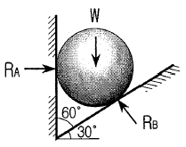
- 0.500W
- 0.577W
- 0.866W
- 1.155W
(정답률: 64%)
17. 그림에서 두 힘 P1, P2에 대한 합력(R)의 크기는?
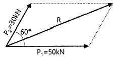
- 60kN
- 70kN
- 80kN
- 90kN
(정답률: 65%)
18. 그림과 같은 라멘의 부정정 차수는?
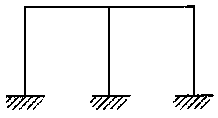
- 3차
- 5차
- 6차
- 7차
(정답률: 63%)
19. 그림과 같은 라멘 구조물에서 A점의 수직반력(RA)은?
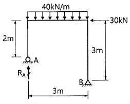
- 30kN
- 45kN
- 60kN
- 90kN
(정답률: 61%)
20. 그림과 같은 단순보에서 최대휨모멘트가 발생하는 위치 x(A점으로부터의 거리)와 최대휨모멘트 Mx는?
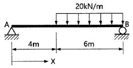
- x=5.2m, Mx=230.4kN·m
- x=5.8m, Mx=176.4kN·m
- x=4.0m, Mx=180.2kN·m
- x=4.8m, Mx=96kN·m
(정답률: 65%)
2과목: 측량학
21. 삼각망 조정에 관한 설명으로 옳지 않은 것은?
- 임의의 한 변의 길이는 계산경로에 따라 달라질 수 있다.
- 검기선은 측정한 길이와 계사된 길이가 동일하다.
- 1점 주위에 있는 각의 합은 360°이다.
- 삼각형의 내각의 합은 180°이다.
(정답률: 63%)
22. 삼각측량과 삼변측향에 대한 설명으로 틀린 것은?
- 삼변측량은 변 길이를 관측하여 삼각정의 위치를 구하는 측량이다.
- 삼각측량의 삼각망 중 가장 정확도가 높은 망은 사변형삼각망이다.
- 삼각점의 선점 시 기계나 측표가 동요할 수 있는 습지나 하상은 피한다.
- 삼각점의 등급을 정하는 주된 목적은 표석설치를 편리하게 하기 위함이다.
(정답률: 62%)
23. 그림과 같은 유토곡선(mass curve)에서 하향구간이 의미하는 것은?
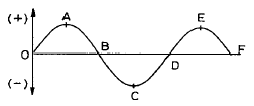
- 성토구간
- 절토구간
- 운반토량
- 운반거리
(정답률: 72%)
24. 조정계산이 완료된 조정각 및 기선으로부터 처음 신설하는 삼각점의 위치를 구하는 계산순서로 가장 적합한 것은?
- 편심조정 계산 → 삼각형계산(변, 방향각) → 경위도 결정 → 좌표조정 계산 → 표고 계산
- 편심조정 계산 → 삼각형계산(변, 방향각) → 좌표조정 계산 → 표고 계산 → 경위도 결정
- 삼각형계산(변, 방향각) → 편심조정 계산 → 표고 계산 → 경위도 결정 → 좌표조정 계산
- 삼각형계산(변, 방향각) → 편심조정 계산 → 표고 계산 → 좌표조정 계산 → 경위도 결정
(정답률: 52%)
25. 기지점의 지반고가 100m이고, 기지점에 대한 후시는 2.75m, 미지점에 대한 전시가 1.40m일 때 미지점의 지반고는?
- 98.65m
- 101.35m
- 102.75m
- 104.15m
(정답률: 65%)
26. 어느 두 지점의 사이의 거리를 A, B, C, D 4명의 사람이 각각 10회 관측한 결과가 다음과 같다면 가장 신뢰성이 낮은 관측자는?
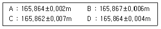
- A
- B
- C
- D
(정답률: 55%)
27. 레벨의 불완전 조정에 의하여 발생한 오차를 최소화하는 가장 좋은 방법은?
- 왕복 2회 측정하여 그 평균을 취한다.
- 기포를 항상 중앙에 오게 한다.
- 시준선의거리를 짧게 한다.
- 전시, 후시의 표척거리를 같게 한다.
(정답률: 69%)
28. 원곡선에 대한 설명으로 틀린 것은?
- 원곡선을 설치하기 위한 기본요소는 반지름(R)과 교각(I)이다.
- 접선길이는 곡선반지름에 비례한다.
- 원곡선은 평면곡선과 수직곡선으로 모두 사용할 수 있다.
- 고속도로와 같이 고속의 원활한 주행을 위해서는 복심곡선 또는 반향곡선을 주로 사용한다.
(정답률: 53%)
29. 트래버스 측량에서 1회 각 관측의 오차가 ±10″라면 30개의 측점에서 1회씩 각 관측하였을 때의 총 각 관측 오차는?
- ±15″
- ±17″
- ±55″
- ±70″
(정답률: 60%)
30. 노선측량에서 단곡선 설치시 필요한 교각이 95°30′, 곡선반지름이 200m일 때 장현(L)의 길이는?
- 296.087m
- 302.619m
- 417.131m
- 597.238m
(정답률: 44%)
31. 등고선에 관한 설명으로 옳지 않은 것은?
- 높이가 다른 등고선은 절대 교차하지 않는다.
- 등고선간의 최단거리 방향은 최대경사 방향을 나타낸다.
- 지도의 도면 내에서 폐합되는 경우에 등고선의 내부에는 산꼭대기 또는 분지가 있다.
- 동일한 경사의 지표에서 등고선 간의 간격은 같다.
(정답률: 72%)
32. 설계속도 80km/h의 고속도로에서 클로소이드 곡선의 곡선반지름이 360m, 완화곡선길이가 40m일 때 클로소이드 매개변수 A는?
- 100m
- 120m
- 140m
- 150m
(정답률: 65%)
33. 교호수준측량의 결과가 아래와 같고, A점의 표고가 10m일 때 B점의 표고는?
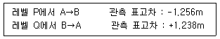
- 8.753m
- 9.753m
- 11.238m
- 11.247m
(정답률: 57%)
34. 직사각형 토지의 면적을 산출하기 위해 두변 a, b의 거리를 관측한 결과가 a=48.25±0.04m, b=23.42±0.02m이었다면 면적의 정밀도(△A/A)는?
- 1/420
- 1/630
- 1/840
- 1/1080
(정답률: 48%)
35. 각관측 장비의 수평축이 연직축과 직교하지 않기 때문에 발생하는 측각오차를 최소화하는 방법으로 옳은 것은?
- 직교에 대한 편차를 구하여 더한다.
- 배각법을 사용한다.
- 방향각법을 사용한다.
- 망원경의 정·반위로 측정하여 평균한다.
(정답률: 49%)
36. 원격탐사(remote sensing)의 정의로 옳은 것은?
- 지상에서 대상 물체에 전파를 발생시켜 그 반사파를 이용하여 측정하는 방법
- 센서를 이용하여 지표의 대상물에서 반사 또는 방사된 전자 스펙트럼을 측정하고 이들의 자료를 이용하여 대상물이나 현상에 관한 정보를 얻는 기법
- 우주에 산재해 있는 물체의 고유스펙트럼을 이용하여 각각의 구성 성분을 지상의 레이더망으로 수집하여 처리하는 방법
- 우주선에서 찍은 중복된 사진을 이용하여 지상에서 항공사진의 처리와 같은 방법으로 판독하는 작업
(정답률: 60%)
37. 초점거리 153mm, 사진크기 23cm×23cm인 카메라를 사용하여 동성 14km, 남북 7km, 평균표고 250m인 거의 평탄한 지역은 축척 1:5000으로 촬영하고자 할 때, 필요한 모델 수는? (단, 종중복도=60%, 횡중복도=30%)
- 81
- 240
- 279
- 961
(정답률: 40%)
38. 그림과 같이 한 점 O에서 A, B, C방향의 각관측을 실시한 결과가 다음과 같을 때 ∠BOC의 최확값은?
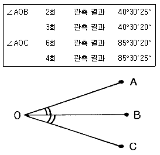
- 45°00′⑤″
- 45°00′02″
- 45°00′03″
- 45°00′00″
(정답률: 53%)
39. 측지학에 관한 설명 중 옳지 않은 것은?
- 측지학이랑 지구내부의 특성, 지구의 형상, 지구표면의 상호위치관계를 결정하는 학문이다.
- 물리학적 측지학은 중력측정, 지자기측정 등을 포함한다.
- 기학학적 측지학에는 천문측량, 위성측량, 높이의 결정 등이 있다.
- 측지측량이란 지구의 곡률을 고려하지 않는 측량으로 11km 이내를 평면으로 취급한다.
(정답률: 58%)
40. 해도와 같은 지도에 이용되며, 주로 하천이나 항만 등의 심전측량을 한 결과를 표시하는 방법으로 가장 적당한 것은?
- 채색법
- 영선법
- 점고법
- 음영법
(정답률: 67%)
3과목: 수리학 및 수문학
41. 유속 3m/s로 매초 100L의 물이 흐르게 하는데 필요한 관의 지름은?
- 153mm
- 206mm
- 265mm
- 312mm
(정답률: 54%)
42. 부력의 원리를 이용하여 그림과 같이 바닷물 위에 떠있는 빙산의 전체적을 구한 값은?
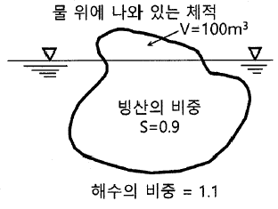
- 550m3
- 890m3
- 1000m3
- 1100m3
(정답률: 49%)
43. 수로경사 1/10000인 직사각형 단면 수로에 유량 30m3/s를 흐르게 할 때 수리학적으로 유리한 단면은? (단, h: 수심, B: 폭이며, Manning공식을 쓰고, n=0.025m-1/3·s)
- h=1.95m, B=3.9m
- h=2.0m, B=4.0m
- h=3.0m, B=6.0m
- h=4.63m, B=9.26m
(정답률: 48%)
44. 축적이 1:50인 하천 수리모형에서 원형 유량 10000m3/s에 대한 모형 유량은?
- 0.401m3/s
- 0.566m3/s
- 14.142m3/s
- 28.284m3/s
(정답률: 43%)
45. 그림과 같은 노즐에서 유량을 구하기 위한 식으로 옳은 것은? (단, 유량계수는 1.0으로 가정한다.)
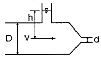
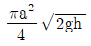
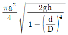
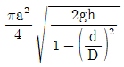
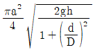
(정답률: 55%)
46. 수로 바닥에서의 마찰력 τ0, 물의 밀도 p, 중력 가속도 g, 수리평균수심 R, 수면경사 I, 에너지선의 경사 Ie라고 할 때 등류(㉠)와 부등류(㉡)의 경우에 대한 마찰속도( u*)는?
- ㉠: ρRIe, ㉡: ρRI
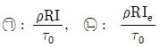
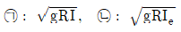
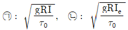
(정답률: 58%)
47. 유속을 V, 물의 단위중량을 γw, 물의 밀도를 p, 중력가속도를 g라 할 때 동수압(動水壓)을 바르게 표시한 것은?
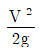
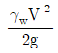
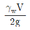
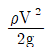
(정답률: 47%)
48. 관수로의 흐름에서 마찰손실계수를 f, 동수반경을 R, 동수경사를 I, Chezy 계수를 C라 할 때 평균 유속 V는?
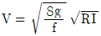
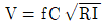
(정답률: 61%)
49. 피압 지하수를 설명한 것으로 옳은 것은?
- 하상 밑의 지하수
- 어떤 수원에서 다른 지역으로 보내지는 지하수
- 지하수와 공기가 접해있는 지하수면을 가지는 지하수
- 두 개의 불투수층 사이에 끼어 있어 대기압보다 큰 압력을 받고 있는 대수층의 지하수
(정답률: 67%)
50. 물의 순환에 대한 설명으로 옳지 않은 것은?
- 지하수 일부는 지표면으로 용출해서 다시 지표수가 되어 하천으로 유입된다.
- 지표에 강하한 우수는 지표면에 도달 전에 그 일부가 식물의 나무와 가지에 의하여 차단된다.
- 지표면에 도달한 우수는 토양 중에 수분을 공급하고 나머지가 아래로 침투해서 지하수가 된다.
- 침투란 토양면을 통해 스며든 물이 중력에 의해 계속 지하로 이동하여 불투수층까지 도달하는 것이다.
(정답률: 59%)
51. 중량이 600N, 비중이 3.0인 물체를 물(담수) 속에 넣었을 때 물 속에서의 중량은?
- 100N
- 200N
- 300N
- 400N
(정답률: 46%)
52. 단위유량도이론에서 사용하고 있는 기본가정이 아닌 것은?
- 비례 가정
- 중첩 가정
- 푸아송 분포 가정
- 일정 기저시간 가정
(정답률: 65%)
53. 10m3/s의 유량이 흐르는 수로에 폭 10m의 단수축이 없는 위어를 설계할 때, 위어의 높이를 1m로 할 경우 예상되는 월류수심은? (단, Francis 공식을 사용하며, 접근유속은 무시한다.)
- 0.67m
- 0.71m
- 0.75m
- 0.79m
(정답률: 45%)
54. 액체 속에 잠겨 있는 경사평면에 작용하는 힘에 대한 설명으로 옳은 것은?
- 경사각과 상관없다.
- 경사각에 직접 비례한다.
- 경사각의 제곱에 비례한다.
- 무게중심에서의 압력과 면적의 곱과 같다.
(정답률: 49%)
55. 수로 폭이 10m인 직사각형 수로의 도수 전수심이 0.5m, 유량이 40m3/s이었다면 도수 후의 수심(h2)은?
- 1.96m
- 2.18m
- 2.31m
- 2.85m
(정답률: 47%)
56. 유역면적 10km2, 강우강도 80mm/h, 유출계수 0.70일 때 합리식에 의한 첨두유량(Qmax)은?
- 155.6m3/s
- 560m3/s
- 1.556m3/s
- 5.6m3/s
(정답률: 60%)
57. Darcy의 법칙에 대한 설명으로 옳지 않은 것은?
- 투수계수는 물의 점성계수에 따라서도 변화한다.
- Darcy의 법칙은 지하수의 흐름에 대한 공식이다.
- Reynold 수가 100 이상이면 안심하고 적용할 수 있다.
- 평균유속이 동수경사와 비례관계를 가지고 있는 흐름에 적용될 수 있다.
(정답률: 63%)
58. 수두차가 10m인 두 저수지를 지름이 30cm, 길이가 300m, 조도계수가 0.013m-1/3·s인 주철관으로 연결하여 송수할 때, 관을 흐르는 유량(Q)은? (단, 관의 유입손실계수 fe=0.5, 유출손실계수 fc=1.0이다.)
- 0.02m3/s
- 0.08m3/s
- 0.17m3/s
- 0.19m3/s
(정답률: 42%)
59. 개수로 내의 흐름에서 평균유속을 구하는 방법 중 2점법의 유속 측정 위치로 옳은 것은?
- 수면과 전수심의 50% 위치
- 수면으로부터 수심의 10%와 90% 위치
- 수면으로부터 수심의 20%와 80% 위치
- 수면으로부터 수심의 40%와 60% 위치
(정답률: 65%)
60. 어떤 유역에 표와 같이 30분간 집중호우가 발생하였다면 지속시간 15분인 최대 강우 강도는?
- 50mm/h
- 64mm/h
- 72mm/h
- 80mm/h
(정답률: 66%)
4과목: 철근콘크리트 및 강구조
61. 그림과 같은 맞대기 용접의 용접부에 생기는 인장응력은?
- 50MPa
- 70.7MPa
- 100MPa
- 141.4MPa
(정답률: 67%)
62. 깊은보는 한쪽 면이 하중을 받고 반대쪽 면이 지지되어 하중과 받침부 사이에 압축대가 형성되는 구조요소로서 아래의 (가) 또는 (나)에 해당하는 부재이다. 아래의 ( )안에 들어갈 ㉠, ㉡으로 옳은 것은?
- ㉠: 4, ㉡: 2
- ㉠: 3, ㉡: 2
- ㉠: 2, ㉡: 4
- ㉠: 2, ㉡: 3
(정답률: 42%)
63. 아래 그림과 같은 인장재의 순단면적은 약 얼마인가? (단, 구멍의 지름은 25mm이고, 강판두께는 10mm이다.)
- 2323mm2
- 2439mm2
- 2500mm2
- 2595mm2
(정답률: 51%)
64. 계수하중에 의한 전단력 Vu=75kN을 받을 수 있는 직사각형 단면을 설계하려고 한다. 기준에 의한 최소 전단철근을 사용할 경우 필요한 보통중량콘크리트의 최소단면적(bwd)은? (단, fck=28MPa, fy=300MPa이다.)
- 101090mm2
- 103073mm2
- 106303mm2
- 113390mm2
(정답률: 51%)
65. 단철근 직사각형 보의 폭이 300mm, 유효깊이가 500mm, 높이가 600mm일 때, 외력에 의해 단면에서 휨균열을 일으키는 휨모멘트(Mcr)는? (단, fck=28MPa, 보통중량콘크리트이다.)
- 58kN·m
- 60kN·m
- 62kN·m
- 64kN·m
(정답률: 55%)
66. 옹벽의 설계에 대한 일반적인 설명으로 틀린 것은?
- 뒷부벽은 캔틸레버로 설계하여야 하며, 앞부벽은 T형보로 설계하여야 한다.
- 활동에 대한 저항력은 옹벽에 작용하는 수평력의 1.5배 이상이어야 한다.
- 전도에 대한 저항휨모멘트는 횡토압에 의한 전도모멘트의 2.0배 이상이어야 한다.
- 저판의 뒷굽판은 정확한 방법이 사용되지 않는 한, 뒷굽판 상부에 재하되는 모든 하중을 지지하도록 설계하여야 한다.
(정답률: 68%)
67. 아래는 슬래브의 직접설계법에서 모멘트 분배에 대한 내용이다. 아래의 ( )안에 들어갈 ㉠, ㉡으로 옳은 것은?
- ㉠: 0.65, ㉡: 0.35
- ㉠: 0.55, ㉡: 0.45
- ㉠: 0.45, ㉡: 0.55
- ㉠: 0.35, ㉡: 0.65
(정답률: 53%)
68. 아래 그림과 같은 철근콘크리트 보-슬래브 구조에서 대칭 T형보의 유효폭(b)은?
- 2000mm
- 2300mm
- 3000mm
- 3180mm
(정답률: 51%)
69. 복철근 콘크리트보 단면에 압축철근비 ρ′=0.01배근되어 있다. 이 보의 순간처짐이 20mm일 때 1년간 지속하중에 의해 유발되는 전체 처짐량은?
- 38.7mm
- 40.3mm
- 42.4mm
- 45.6mm
(정답률: 53%)
70. 철근콘크리트 부재에서 Vs가 를 초과하는 경우 부재축에 직각으로 배치된 전단철근의 간격 제한으로 옳은 것은? (단, bw: 복부의폭, d: 유효깊이, λ: 경량콘크리트 계수, Vs: 전단철근에 의한 단면의 공칭전단강도)
- d/2이하, 또 어느 경우이든 600mm 이하
- d/2이하, 또 어느 경우이든 300mm 이하
- d/4이하, 또 어느 경우이든 600mm 이하
- d/4이하, 또 어느 경우이든 300mm 이하
(정답률: 39%)
71. 아래에서 ( )안에 들어갈 수치로 옳은 것은?
- 700
- 800
- 900
- 1000
(정답률: 48%)
72. 용접이음에 관한 설명으로 틀린 것은
- 내부 검사(X-선 검사)가 간단하지 않다.
- 작업의 소음이 적고 경비와 시간이 절약된다.
- 리벳구멍으로 인한 단면 감소가 없어서 강도 저하가 없다.
- 리벳이음에 비해 약하므로 응력 집중 현상이 일어나지 않는다.
(정답률: 57%)
73. 단면이 300×400mm이고, 150mm2의 PS 강선 4개를 단면도심축에 배치한 프리텐션 PS 콘크리트 부재가 있다. 초기 프리스트레스 1000MPa일 때 콘크리트의 탄성수축에 의한 프리스트레스의 손실량은? (단, 탄성계수비(n)는 6.0이다.)
- 30MPa
- 34MPa
- 42MPa
- 52MPa
(정답률: 40%)
74. 포스트텐션 긴장재의 마찰손실을 구하기 위해 아래와 같은 근사식을 사용하고자 할 때 근사식을 사용할 수 있는 조건으로 옳은 것은?
- Ppj의 값이 5000kN 이하인 경우
- Ppj의 값이 5000kN 초과하는 경우
- (Klpx+μpαpx) 값이 0.3 이하인 경우
- (Klpx+μpαpx) 값이 0.3 초과인 경우
(정답률: 57%)
75. 2방향 슬래브의 설계에서 직접설계법을 적용할 수 있는 제한 사항으로 틀린 것은?
- 각 방향으로 3경간 이상 연속되어야 한다.
- 슬래브 판들은 단변 경간에 대한 장변 경간의 비가 2이하인 직사각형이어야 한다.
- 각 방향으로 연속한 받침부 중심간 경간 차이는 긴 경간의 1/3 이하이어야 한다.
- 연속한 기둥 중심선을 기준으로 기둥의 어긋남은 그 방향 경간의 20% 이하이어야 한다.
(정답률: 62%)
76. 철근의 정착에 대한 설명으로 틀린 것은?
- 인장 이형철근 및 이형철선의 정착길이(ℓd)는 항상 300mm 이상이어야 한다.
- 압축 이형철근의 정착길이(ℓd)는 항상 400mm 이상이어야 한다.
- 갈고리는 압축을 받는 경우 철근정착에 유효하지 않은 것으로 보아야 한다.
- 단부에 표준갈고리가 있는 인장 이형철근의 정착길이(ℓdh)는 항상 철근의 공칭지름(db)의 8배 이상, 또한 150mm 이상이어야 한다.
(정답률: 39%)
77. 그림과 같은 다면의 도심에 PS강재가 배치되어 있다. 초기 프리스트레스 1800kN을 작용시켰다. 30%의 손실을 가정하여 콘크리트의 하연응력이 0이 되기 위한 휨모멘트 값은? (단, 자중은 무시한다.)
- 120kN·m
- 126 kN·m
- 130kN·m
- 150kN·m
(정답률: 55%)
78. 콘크리트 설계기준압축강도가 28MPa, 철근의 설계기준항복강도가 350MPa로 설계된 길이가 4m인 캔틸레버 보가 있다. 처짐을 계산하지 않는 경우의 최소 두께는? (단, 보통중량콘크리트(mc=2300kg/m3)이다.)
- 340mm
- 465mm
- 512mm
- 600mm
(정답률: 55%)
79. 나선철근 압축부재 단면의 심부 지름이 300mm, 기둥 단면의 지름이 400mm인 나선철근 기둥의 나선철근비는 최소 얼마 이상이어야 하는가? (단, 나선철근의 설계기준항복강도(fyt)는 400MPa, 콘크리트의 설계기준압축강도(fck)는 28MPa이다.)
- 0.0184
- 0.0201
- 0.0225
- 0.0245
(정답률: 27%)
80. 강도감소계수(Ø)를 규정하는 목적으로 옳지 않은 것은?
- 부정확한 설계 방정식에 대비한 여유
- 구조물에서 차지하는 부재의 중요도를 반영
- 재료 강도와 치수가 변동할 수 있으므로 부재의 강도 저하 확률에 대비한 여유
- 하중의 공칭값과 실제 하중 간의 불가피한 차이 및 예기치 않은 초과하중에 대비한 여유
(정답률: 49%)
5과목: 토질 및 기초
81. 포화단위중량(γsat)이 19.62kN/m3인 사질토로된 무한사면이 20°로 경사져 있다. 지하수위가 지표면과 일치하는 경우 이 사면의 안전율이 1이상이 되기 위해서 흙의 내부마찰각이 최소 몇 도 이상이어야 하는가? (단, 물의 단위중량은 9.81kN/m3이다.)
- 18.21°
- 20.52°
- 36.06°
- 45.47°
(정답률: 43%)
82. 그림에서 지표면으로부터 깉이 6m에서의 연직응력(σv)과 수평응력(σh)의 크기를 구하면? (단, 토압계수는 0.6이다.)
- σv=87.3kN/m2, σh=52.4kN/m2
- σv=95.2kN/m2, σh=57.1kN/m2
- σv112.2kN/m2, σh=67.3kN/m2
- σv123.4kN/m2, σh=74.0kN/m2
(정답률: 54%)
83. 흙의 분류법인 AASHTO분류법과 통일분류법을 비교ㆍ분석한 내용으로 틀린 것은?
- 통일분류법은 0.075mm체 통과율 35%를 기준으로 조립토와 세립토로 분류하는데 이것은 AASHTO분류법보다 적합하다.
- 통일분류법은 입도분포, 액성한계, 소성지수 등을 주요 분류인자로 한 분류법이다.
- AASHTO분류법은 입도분포, 군지수 등을 주요 분류인자로 한 분류법이다.
- 통일분류법은 유기질토 분류방법이 있으나 AASHTO분류법은 없다.
(정답률: 50%)
84. 흙 시료의 잔단시험 중 일어나는 다일러턴시(Dilatancy) 현상에 대한 설명으로 틀린 것은?
- 흙이 전단될 때 전단면 부근의 흙입자가 재배열되면서 부피가 팽창하거나 수축하는 현상을 다일러턴시라 부른다.
- 사질토 시료는 전단 중 다일러턴시가 일어나지 않는 한계의 간극비가 존재한다.
- 정규압밀 점토의 경우 정(+)의 다일러턴시가 일어난다.
- 느슨한 모래는 보통 부(-)의 다일러턴시가 일어난다.
(정답률: 40%)
85. 도로의 평판재하 시험에서 시험을 멈추는 조건으로 틀린 것은?
- 완전히 침하가 멈출 때
- 침하량이 15mm에 달할 때
- 재하 응력이 지반의 항복점을 넘을 때
- 재하 응력이 현장에서 예상할 수 있는 기장 큰 접지 압력의 크기를 넘을 때
(정답률: 56%)
86. 압밀시험에서 얻은 e-iogP곡선으로 구할 수 있는 것이 아닌 것은?
- 선행압밀압력
- 팽창지수
- 압축지수
- 압밀계수
(정답률: 34%)
87. 상ㆍ하층이 모래로 되어 있는 두께 2m의 점토층이 어떤 하중을 받고 있다. 이 점토층의 투수계수가 5×10-7㎝/s, 체적변화계수(mv)가 5.0cm2/kN일 때 90% 압밀에 요구되는 시간은? (단, 물의 단위중량은 9.81kN/m3이다.)
- 약 5.6일
- 약 9.8일
- 약 15.2일
- 약 47.2일
(정답률: 44%)
88. 어떤 지반에 대한 흙의 입도분석결과 곡률계수(Cg)는 1.5, 균등계수(Cu)는 15이고 입자는 모난 형상이었다. 이때 Dunham의 공식에 의한 흙의 내부마찰각(ø)의 추정치는? (단, 표준관입시험 결과 N치는 10이었다.)
- 25°
- 30°
- 36°
- 40°
(정답률: 43%)
89. 흙의 내부마찰각이 20°, 점착력이 50kN/m2, 습윤단위중량이 17kN/m3, 지하수위 아래 흙의 포화단중량이 19kN/m3일 때 3m×3m 크기의 정사각형 기초의 극한지지력을 Terzaghi의 공식으로 구하면? (단, 지하수위는 기초바닥 깊이와 같으며 물의 단위중량은 9.81kN/m3이고, 지지력계수 Nc=18, Nγ=5, Nq=7.5이다.)
- 1231.24kN/m2
- 1337.31kN/m2
- 1480.14kN/m2
- 1540.42kN/m2
(정답률: 33%)
90. 그림에서 a-a′면 바로 아래의 유효응력은? (단, 흙의 간극비(e)는 0.4, 비중(Gs)은 2.65, 물의 단위중량은 9.81kN/m3이다.)
- 68.2kN/m2
- 82.1kN/m2
- 97.4kN/m2
- 102.1kN/m2
(정답률: 27%)
91. 시료채쥐 시 샘플로(sampler)의 외경이 6㎝, 내경이 5.5㎝일 때 면적비는?
- 8.3%
- 9.0%
- 16%
- 19%
(정답률: 51%)
92. 다짐에 대한 설명으로 틀린 것은?
- 다짐에너지는 래머(sampler)의 중량에 비례한다.
- 입도배합이 양호한 흙에서는 최대건조 단위중량이 높다.
- 동일한 흙일지라도 다짐기계에 따라 다짐효과는 다르다.
- 세립토가 많을수록 최적함수비가 감소한다.
(정답률: 55%)
93. 20개의 무리말뚝에 있어서 효율이 0.75이고, 단항으로 계산된 말뚝 한 개의 허용지지력이 150kN일 때 무리말뚝의 허용지지력은?
- 1125kN
- 2250kN
- 3000kN
- 4000kN
(정답률: 54%)
94. 연약지반 위에 성토를 실시한 다음, 말뚝을 시공하였다. 시공 후 발생될 수 있는 현상에 대한 설명으로 옳은 것은?
- 성토를 실시하였으므로 말뚝의 지지력은 점차 증가한다.
- 말뚝을 암반층 상단에 위치하도록 시공하였다면 말뚝의 지지력에는 변함이 없다.
- 압밀이 진행됨에 따라 지반의 전단강도가 증가되므로 말뚝의 지지력은 점차 증가한다.
- 압밀로 인해 부주면마찰력이 발생되므로 말뚝의 지지력은 감소된다.
(정답률: 52%)
95. 아래와 같은 상황에서 강도정수 결정에 접촉한 삼축압축시험의 종류는?
- 비압밀 비배수시험(UU)
- 비압밀 배수시험(UD)
- 압밀 비배수시험(CU)
- 압밀 배수시험(CD)
(정답률: 59%)
96. 베인전단시험(vane shear test)에 대한 설명으로 틀린 것은?
- 베인전단시험으로부터 흙의 내부마찰각을 측정할 수 있다.
- 현장 원위치 시험의 일종으로 점토의 비배수 전단강도를 구할 수 있다.
- 연약하거나 중간 정도의 점토성 지반에 적용된다.
- 십자형의 베인(vane)을 땅 속에 압입한 후, 회전모멘트를 가해서 흙이 원통형으로 전단파괴될 때 저항모멘트를 구함으로써 비배수 전단강도를 측정하게 된다.
(정답률: 49%)
97. 연약지반 개량공법 중 점성토지반에 이용되는 공법은?
- 전기충격 공법
- 폭차다짐 공법
- 생석회말뚝 공법
- 바이브로플로테이션 공법
(정답률: 49%)
98. 어떤 모래층의 간극바(e)는 0.2, 비중(Gs)은 2.60이었다. 이 모래가 분사현상(Quick Sand)이 일어나는 한계 동수경사(ic)는?
- 0.56
- 0.95
- 1.33
- 1.80
(정답률: 57%)
99. 주동토압을 PA, 수동토압을 PP, 정지토압을 PO라 할 때 토압의 크기를 비교한 것으로 옳은 것은?
- PA ＞ PP ＞ PO
- PP ＞ PO ＞ PA
- PP ＞ PA ＞ PO
- PO ＞ PA ＞ PP
(정답률: 50%)
100. 그림과 같은 지반내의 유선망이 주어졌을 때 폭 10m에 대한 침두 유량은? (단, 투수계수(K)는 2.2×10-2㎝/이다.)
- 3.96cm3/s
- 39.6cm3/s
- 396cm3/s
- 3960cm3/s
(정답률: 25%)
6과목: 상하수도공학
101. 분류식 하수도의 장점이 아닌 것은?
- 오수관내 유량이 일정하다.
- 방류장소 선정이 자유롭다.
- 사설 하수관 연결하기가 쉽다.
- 모든 발생오수를 하수처리장으로 보낼 수 있다.
(정답률: 41%)
102. 활성슬러지의 SVI가 현저하게 증가되어 응집성이 나빠져 최동 침전지에서 처리수의 분리가 곤란하게 되었다. 이것은 활성슬러지의 어떤 이상 현상에 해당되는가?
- 활성슬러지의 부패
- 활성슬러지의 상승
- 활성슬러지의 팽화
- 활성슬러지의 해제
(정답률: 56%)
103. 하수도용 펌프 흡입구의 표준 유속으로 옳은 것은? (단, 흡입구의 유속은 펌프의 회전수 및 흡입실양정 등을 고려한다.)
- 0.3~0.5m/s
- 1.0~1.5m/s
- 1.5~3.0m/s
- 5.0~10.0m/s
(정답률: 45%)
104. d양수량이 8m3/min, 전영정이 4m, 회전수 1160rpm인 펌프의 비교회전도는?
- 316
- 985
- 1160
- 1436
(정답률: 59%)
1⑤. 도수관을 설계할 때 자연유하식인 경우에 평균유속의 허용한도로 옳은 것은?
- 최소한도 0.3m/s, 최대한도 3.0m/s
- 최소한도 0.1m/s, 최대한도 2.0m/s
- 최소한도 0.2m/s, 최대한도 1.5m/s
- 최소한도 0.5m/s, 최대한도 1.0m/s
(정답률: 63%)
106. 혐기성 소화 공정의 영향인자가 아닌 것은?
- 온도
- 메탄함량
- 알칼리도
- 체류시간
(정답률: 55%)
107. 정수장에서 응집제로 사용하고 있는 폴리염화알루미(PACl)의 특성에 관한 설명으로 틀린 것은?
- 탁도제거에 우수하며 특히 흥수 시 효과가 탁월하다.
- 최적 주입율의 폭이 크며, 과잉으로 주입하여도 효과가 떨어지지 않는다.
- 몰에 용해되면 가수분해가 촉진되므로 원액을 그대로 사용하는 것이 바람직하다.
- 낮은 수온에 대해서도 응집효과가 좋지만 황산알루미늄과 혼합하여 사용햐야 한다.
(정답률: 39%)
108. 완속여과지와 비교할 때, 급속여과지에 대한 설명으로 틀린 것은?
- 대규모처리에 적합하다.
- 세균처리에 있어 확실성이 적다.
- 유입수가 고탁도인 경우에 적합하다.
- 유지관리비가 적게 들고 특별한 관리기술이 필요치 않다.
(정답률: 56%)
109. 유량이 100000m3/d이고 BOD가 2mg/L인 하천으로 유량 1000m3/d, BOD 100mg/L인 하수가 유입된다. 하수가 유입된 후 혼합된 BOD의 농도는?
- 1.97mg/L
- 2.97mg/L
- 3.97mg/L
- 4.97mg/L
(정답률: 53%)
110. 보통 상수도의 기본계획에서 대상이 되는 기간인 계획(목표)년도는 계획수립부터 몇 년간을 표준으로 하는가?
- 3~5년간
- 5~10년간
- 15~20년간
- 25~30년간
(정답률: 61%)
111. 일반활성슬러지 공정에서 다음 조건과 같은 반응조의 수리학적 체류시간(HRT) 및 미생물 체류시간(SRT)을 모두 올바르게 배열한 것은? (단, 처리수 SS룰 고려한다.)
- HRT: 0.25일, SRT: 8.35일
- HRT: 0.25일, SRT: 9.53일
- HRT: 0.5일, SRT: 10.35일
- HRT: 0.5일, SRT: 11.53일
(정답률: 26%)
112. 배수면적이 2km2인 유역 내 강우의 하수관로 유입시간이 6분, 유출계수가 0.70일 때 하수관로 내 유속이 2m/s인 1㎞ 길이의 하수관에서 유출괴는 우수량은? (단, 강우강도 , t의 단위:[분])
- 0.3m3/s
- 2.6m3/s
- 34.6m3/s
- 43.9m3/s
(정답률: 48%)
113. 펌프의 흡입구경(口徑)을 결정하는 식으로 옳은 것은? (단, Q: 펌프의 토출량(m3/min), V: 흡입구의 유속(m/s))
(정답률: 46%)
114. 펌프의 공동현상(cavitation)에 대한 설명으로 틀린 것은?
- 공동현상이 발생하면 소음이 발생한다.
- 공동현상은 펌프의 성능 저하의 원인이 될 수 있다.
- 공동현상을 방지하려면 펌프의 회전수를 크게 해야 한다.
- 펌프의 흡입양정이 너무 작고 임펠러 회전속도가 빠를 때 공동현상이 발생한다.
(정답률: 62%)
115. 하수도 시설에 손상을 주지 않기 위하여 설치되는 전처리(primary treatment)공정을 필요로 하지 않는 폐수는?
- 산성 또는 알카리성이 강한 폐수
- 대형 부유물질만을 함유하는 폐수
- 침전성 물질을 다량으로 함유하는 폐수
- 아주 미세한 부우물질만을 함유하는 폐수
(정답률: 50%)
116. 지하의 사질(砂質) 여과층에서 수두차 h가 0.5m이며 투과거리 ℓ이 2.5m 인 경우 이곳을 통과하는 지하수의 유속은? (단, 투수계수는 0.3㎝/s)
- 0.06㎝/s
- 0.015㎝/s
- 1.5㎝/s
- 0.375㎝/s
(정답률: 43%)
117. 정수시설에 관한 사항으로 틀린 것은?
- 착수정의 용량은 체류시간을 5분 이상으로 한다.
- 고속응집침전지의 용량은 계획정수량의 1.5~2.0시간분으로 한다.
- 정수지의 용량은 첨두수요대처용량과 소독접촉시간용량을 고려하여 최소 2시간분 이상을 표준으로 한다.
- 플록형성지에서 플록형성시간은 계획정수량에 대하여 20~40분간을 표준으로 한다.
(정답률: 26%)
118. 송수시설의 계획송수량은 원칙적으로 무엇을 기준으로 하는가?
- 연평균급수량
- 시간최대급수량
- 계획1일평균급수량
- 계획1일최대급수량
(정답률: 52%)
119. 자연수 중 지하수의 경도(硬度)가 높은 이유는 어떤 물질이 지하수에 많이 함유되어 있기 때문인가?
- O2
- CO2
- NH3
- Colloid
(정답률: 42%)
120. 일반적인 상수도 계통도를 올바르게 나열한 것은?
- 수원 및 저수시설 → 취수 → 배수 → 송수 → 정수 → 도수 → 급수
- 수원 및 저수시설 → 취수 → 도수 → 정수 → 송수 → 배수 → 급수
- 수원 및 저수시설 → 취수 → 배수 → 정수 → 송수 → 배수 → 송수
- 수원 및 저수시설 → 취수 → 도수 → 정수 → 급수 → 배수 → 송수
(정답률: 63%)
편심하중은 F = 1000N으로 주어졌으며, 이는 단면의 중심축에서 100mm 떨어져 있다. 따라서 편심거리 e = 100mm = 0.1m이다.
단면의 너비 b = 50mm, 높이 h = 100mm이므로, 단면의 면적 A = bh = 5000mm^2 = 0.0⑤m^2이다.
편심하중에 의한 모멘트 M = Fe = 1000N × 0.1m = 100Nm이다.
최대압축응력은 다음과 같이 계산할 수 있다.
σ = M / Z
여기서 Z는 단면의 직경관성이다. 직사각형 단면의 경우, 직경관성은 다음과 같이 계산할 수 있다.
Z = bh^2 / 6
따라서,
Z = (50mm) × (100mm)^2 / 6 = 416,667mm^3 = 0.000416667m^3
따라서,
σ = M / Z = 100Nm / 0.000416667m^3 = 240,000Pa = 240MPa
하지만 이 값은 최대압축응력이 아니라, 최대인장응력이다. 최대압축응력은 최대인장응력의 절반인 120MPa이다.
따라서, 정답은 "60MPa"가 아니라 "30MPa"이다.